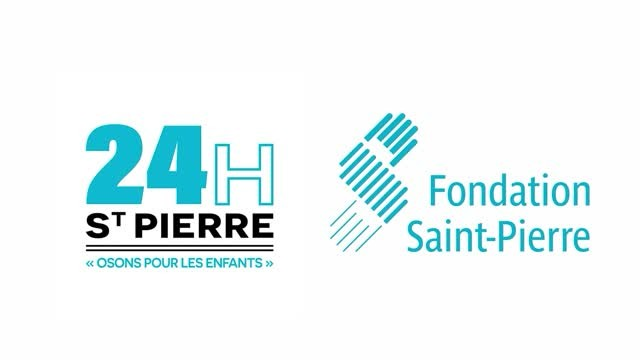

Ce qui me tient à cœur
Parce que le savoir-faire ne va pas sans le savoir-être, je vous présente ici les causes qui me mobilisent au quotidien.
La Ligue contre le cancer
 Donner du sens à mes études est primordial pour moi. Actuellement, je consacre une partie de mon temps à l'organisation d'un événement solidaire au profit de la Ligue contre le cancer (34). C'est un projet que nous portons collectivement avec mon équipe, animés par la même volonté : réussir à mobiliser les gens pour aider la recherche.
Donner du sens à mes études est primordial pour moi. Actuellement, je consacre une partie de mon temps à l'organisation d'un événement solidaire au profit de la Ligue contre le cancer (34). C'est un projet que nous portons collectivement avec mon équipe, animés par la même volonté : réussir à mobiliser les gens pour aider la recherche.
24h Saint-Pierre
 Parallèlement, je renouvelle chaque année mon engagement en tant que bénévole auprès des 24h Saint-Pierre. Ce relais de 24h de course et de marche solidaire est une fidélité qui me tient à cœur pour soutenir durablement les actions de la fondation et vivre une expérience humaine forte.
Création d'une micro-association - "Pitchoun"
 Au début de mes études, animé par la volonté d'agir concrètement, j'ai co-créé la micro-association "Pitchoun". Notre mission était de briser le quotidien parfois difficile d'enfants en situation de handicap. Au-delà de la simple intention, cela a nécessité une véritable gestion de projet : nous organisions nos propres campagnes de récolte de fonds pour financer intégralement des événements festifs lors de périodes clés comme Noël, Pâques ou Halloween. L'aboutissement de ce travail était humain avant tout : nous nous rendions directement au sein d'Instituts Médico-Éducatifs (IME) pour animer ces journées et partager des moments de joie et de sourires avec les enfants.
Au début de mes études, animé par la volonté d'agir concrètement, j'ai co-créé la micro-association "Pitchoun". Notre mission était de briser le quotidien parfois difficile d'enfants en situation de handicap. Au-delà de la simple intention, cela a nécessité une véritable gestion de projet : nous organisions nos propres campagnes de récolte de fonds pour financer intégralement des événements festifs lors de périodes clés comme Noël, Pâques ou Halloween. L'aboutissement de ce travail était humain avant tout : nous nous rendions directement au sein d'Instituts Médico-Éducatifs (IME) pour animer ces journées et partager des moments de joie et de sourires avec les enfants.